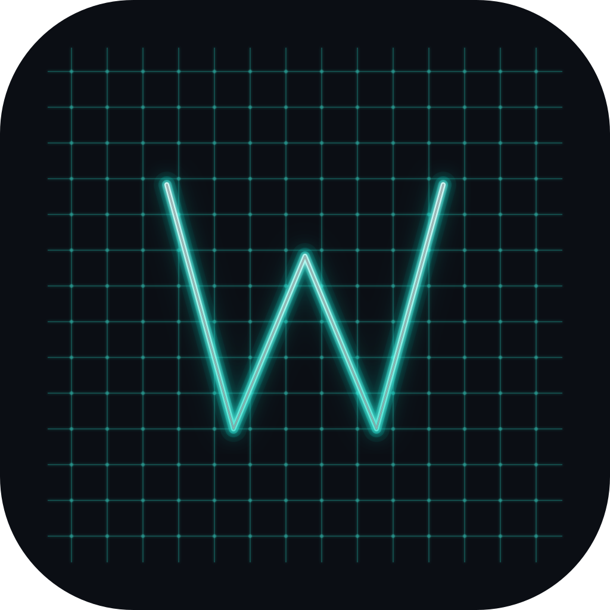
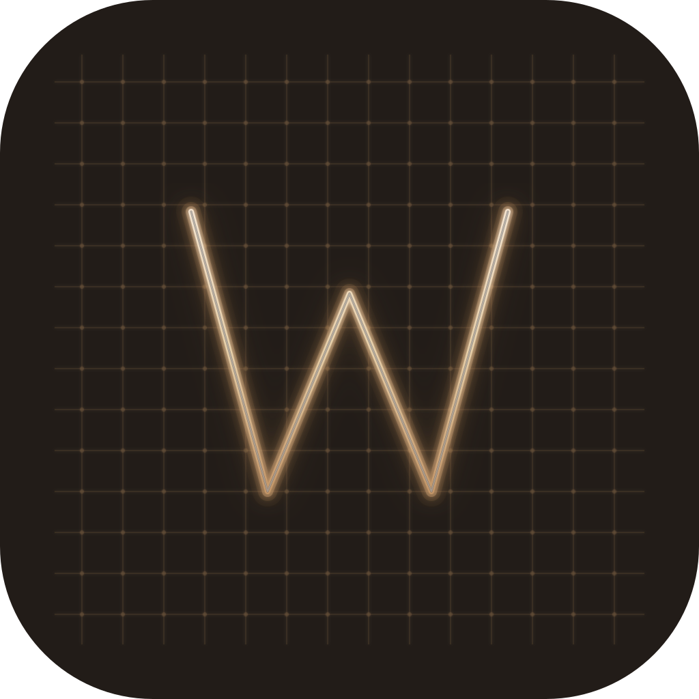

Weft Logo — 配色方向对比
冷青色 (原设计) vs 暖琥珀色 (v0.8 "Quiet × Warm" 匹配)
两版 Logo 几何结构完全相同 (W 路径 + 14×14 编织网格 + 196 交叉点 + 6 层霓虹灯管效果)，
仅替换配色：
• 冷青版 — #20f0e0 W 主色 on #0b0e14 冷蓝黑底 (原设计，2026-07-04)
• 暖琥珀版 — #d4a574 W 主色 on #221c18 暖棕黑底 (匹配 v0.8 UI 主题)
请在下方各场景下对比，确认最终采用方向后，我会生成对应 PNG 尺寸并接入 v1.0 发布流程。
① 终端深色背景 (512px)
这是 Logo 在 weft 应用内 (About 对话框 / 窗口标题) 的主要呈现场景

冷青色 (原设计)
#20f0e0 on #0b0e14 · 科技感 · 冷调

暖琥珀色 (v0.8 匹配)
#d4a574 on #221c18 · 温暖感 · 与 UI 统一
② 多尺寸可读性 (深色背景)
Dock / 任务栏 / 标题栏 使用场景。32px 是最小可读尺寸，网格细节在此尺寸坍缩
③ 模拟 macOS Dock (浅色背景)
macOS Dock 默认是浅色半透明背景。Logo 在浅色背景上的对比度是关键考量
↑ 模拟 Dock 中的实际观感 (72px @2x)
④ 配色对照表
⑤ 方案分析
冷青色方案 (原设计)
- Dock 中辨识度高，冷色调在浅色 Dock 背景上对比强烈
- 霓虹青色更具"终端/科技"气质，与 Warp 紫色形成差异
- assets/logo/png/ 已有全部 7 尺寸 PNG，零额外工作
- 与 v0.8 "Quiet × Warm" UI 主题色调不一致 (冷 vs 暖)
- 青色偏冷，可能与温暖琥珀色 UI 出现视觉割裂感
暖琥珀色方案 (v0.8 匹配)
- 与 v0.8 "Quiet × Warm" 终端 UI 主题色调完全统一
- 品牌一致性 — 从 Dock 图标到应用内 UI 色调连贯
- 琥珀色温暖、低饱和，符合 weft "编织/织物" 名字的柔和气质
- 需基于 weft-icon-warm.svg 重新栅格化生成 7 尺寸 PNG (~2 分钟 sips 命令)
- 暖色调在浅色 Dock 背景上对比度略低于冷色 (但 #221c18 深底仍可辨)
决策提示：请告诉我采用哪个方向 —
回复 冷青色 或 暖琥珀色。
确认后，我会：
① 生成选定版本的 .icns 文件 (从 SVG 栅格化 → iconutil 打包)
② 接入 winit 运行时窗口图标 (crates/weft_app/src/main.rs)
③ 更新 v1.0_IMPLEMENTATION_PLAN.md Phase 3 — 把 Logo 接入列为发布前必做项
④ 若选暖色，会在 assets/logo/png/ 旁生成 png-warm/ 目录存放新尺寸 PNG